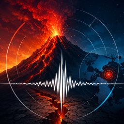

Volcano
Supporto
Support
Support
Assistance
Soporte
Volcano è un'app informativa. Raccoglie dati già pubblicati da enti scientifici e li mostra sempre con la fonte e l'ora di lettura. Non è un sistema di allerta, non prevede eruzioni e non genera livelli di rischio propri. In caso di emergenza fanno fede solo le comunicazioni della Protezione Civile.
Contatti
Domande, problemi o suggerimenti? Scrivici — di solito rispondiamo entro un paio di giorni.
Scrivi al supportoDomande frequenti
Perché per molti vulcani non compaiono tipo, stato o ultima eruzione?
Perché non abbiamo una fonte con licenza verificata che li dichiari. Quelle informazioni esistono, ma o stanno su pagine che non dichiarano alcuna licenza d'uso, o compaiono in forma discorsiva da cui dedurle sarebbe inventarle. Preferiamo una riga assente a un dato inventato: le righe senza dato semplicemente non vengono mostrate. Coordinate e quota, invece, vengono da Wikidata, che è di pubblico dominio.
La scheda Bollettini è vuota
I bollettini degli osservatori vulcanologici sono pubblici, ma le pagine che li ospitano non dichiarano una licenza che ne permetta la ripubblicazione. Finché non otteniamo conferma scritta, quella scheda resta vuota. È una scelta, non un guasto.
L'app prevede le eruzioni?
No, e non lo farà. Volcano non elabora previsioni e non assegna livelli di allerta: mostra ciò che gli enti hanno già pubblicato, con la data. Chi produce previsioni e allerte sono gli enti competenti, e le loro comunicazioni sono le uniche che contano.
Non ricevo le notifiche
Controlla tre cose, in quest'ordine: che le notifiche siano attive in Impostazioni di iOS → Notifiche → Volcano; che siano attive anche dentro l'app, in Impostazioni; e che la soglia di magnitudo non sia troppo alta. Con la soglia a 4.0 passano pochi eventi all'anno. Se non hai selezionato nessun vulcano riceverai le notifiche di tutti, che è il comportamento voluto.
Perché l'app mi chiede la posizione?
Solo per ordinare i vulcani per distanza e centrare la mappa. Il permesso viene chiesto quando scegli una di queste due cose, non all'avvio, e la posizione non lascia mai il telefono. Se lo neghi l'app funziona lo stesso: la lista viene ordinata alfabeticamente.
Funziona senza connessione?
Sì, per consultare quanto già scaricato. I dati vengono conservati in una cache locale e mostrati anche offline, con l'indicazione di quando sono stati letti l'ultima volta. Un dato vecchio ti viene mostrato dicendoti che è vecchio, invece di lasciarti una schermata bianca.
Ogni dato riporta una licenza: perché?
Perché i dati non sono nostri. Ogni scheda mostra da dove viene l'informazione, con quale licenza è pubblicata e quando l'abbiamo letta. Quando una licenza non è stata verificata leggendone il testo, l'app lo dice esplicitamente invece di lasciare il campo vuoto.
Ho trovato un dato che mi sembra sbagliato
Scrivici indicando il vulcano o l'evento e cosa non torna. Se l'errore è nostro lo correggiamo; se viene dalla fonte lo segnaliamo a chi l'ha pubblicato, perché non riscriviamo i dati altrui.
Da dove vengono i dati
- Eventi sismici: INGV, servizio FDSN event — CC BY 4.0
- Coordinate e quota dei vulcani: Wikidata, per identificativo esplicito — CC0 1.0
- Ultima eruzione di Vulcano: INGV Osservatorio Etneo — CC BY 4.0
La selezione dei quindici vulcani è curata a mano; i numeri no. Ogni voce è scelta una per una, ma coordinate e quota vengono da un identificativo Wikidata esplicito, così restano verificabili aprendo la pagina corrispondente.
Privacy
Volcano non ha account, non usa strumenti di analisi e non integra librerie di terze parti. Leggi l'informativa completa.
Volcano is an informational app. It gathers data already published by scientific institutions and always shows it with its source and the time it was read. It is not an alerting system, it does not forecast eruptions and it does not produce risk levels of its own. In an emergency, only communications from the Italian Civil Protection Department apply.
Contact
Questions, problems or suggestions? Write to us — we usually reply within a couple of days.
Email supportFrequently asked questions
Why do many volcanoes show no type, status or last eruption?
Because we have no source with a verified licence that states them. That information exists, but it either sits on pages that declare no licence at all, or appears as prose from which deducing it would mean inventing it. We prefer a missing row to an invented value: rows without data are simply not shown. Coordinates and elevation, by contrast, come from Wikidata, which is public domain.
The Bulletins tab is empty
The volcano observatories' bulletins are public, but the pages hosting them declare no licence permitting republication. Until we get written confirmation, that tab stays empty. It is a choice, not a fault.
Does the app forecast eruptions?
No, and it never will. Volcano produces no forecasts and assigns no alert levels: it shows what institutions have already published, with the date. Forecasts and alerts are produced by the competent authorities, and their communications are the only ones that count.
I don't receive notifications
Check three things, in this order: that notifications are allowed in iOS Settings → Notifications → Volcano; that they are also enabled inside the app, under Settings; and that your magnitude threshold is not too high. At 4.0, only a handful of events pass each year. If you have selected no volcanoes you will receive notifications for all of them, which is the intended behaviour.
Why does the app ask for my location?
Only to sort volcanoes by distance and to centre the map. Permission is requested when you choose one of those two things, not at launch, and your location never leaves the phone. If you deny it the app still works: the list is sorted alphabetically.
Does it work without a connection?
Yes, for browsing what you have already downloaded. Data is kept in a local cache and shown offline too, along with when it was last read. Stale data is shown while telling you it is stale, rather than leaving you a blank screen.
Every item carries a licence — why?
Because the data is not ours. Each record shows where the information comes from, under which licence it is published and when we read it. When a licence has not been verified by reading its text, the app says so explicitly instead of leaving the field blank.
I found something that looks wrong
Write to us naming the volcano or event and what does not add up. If the error is ours we fix it; if it comes from the source we report it to whoever published it, because we do not rewrite other people's data.
Where the data comes from
- Seismic events: INGV, FDSN event web service — CC BY 4.0
- Volcano coordinates and elevation: Wikidata, by explicit identifier — CC0 1.0
- Last eruption of Vulcano: INGV Osservatorio Etneo — CC BY 4.0
The selection of fifteen volcanoes is curated by hand; the numbers are not. Each entry is chosen one by one, but coordinates and elevation come from an explicit Wikidata identifier, so they stay verifiable by opening the corresponding page.
Privacy
Volcano has no accounts, uses no analytics tools and bundles no third-party libraries. Read the full policy.
Volcano ist eine Informations-App. Sie sammelt bereits von wissenschaftlichen Einrichtungen veröffentlichte Daten und zeigt sie stets mit Quelle und Abrufzeit. Sie ist kein Warnsystem, sagt keine Ausbrüche voraus und erzeugt keine eigenen Gefahrenstufen. Im Notfall gelten ausschließlich die Mitteilungen des italienischen Zivilschutzes.
Kontakt
Fragen, Probleme oder Anregungen? Schreiben Sie uns — meist antworten wir innerhalb weniger Tage.
Support kontaktierenHäufige Fragen
Warum fehlen bei vielen Vulkanen Typ, Status oder letzter Ausbruch?
Weil uns keine Quelle mit geprüfter Lizenz vorliegt, die sie angibt. Diese Angaben existieren, stehen aber entweder auf Seiten ohne jede Lizenzangabe oder in Fließtext, aus dem sie abzuleiten hieße, sie zu erfinden. Uns ist eine fehlende Zeile lieber als ein erfundener Wert: Zeilen ohne Daten werden schlicht nicht angezeigt. Koordinaten und Höhe stammen dagegen aus Wikidata und sind gemeinfrei.
Der Tab „Bulletins“ ist leer
Die Bulletins der Vulkanobservatorien sind öffentlich, doch die Seiten, die sie beherbergen, nennen keine Lizenz, die eine erneute Veröffentlichung erlaubt. Bis wir eine schriftliche Bestätigung erhalten, bleibt dieser Tab leer. Das ist eine Entscheidung, kein Fehler.
Sagt die App Ausbrüche voraus?
Nein, und sie wird es nie tun. Volcano erstellt keine Prognosen und vergibt keine Warnstufen: Sie zeigt, was Einrichtungen bereits veröffentlicht haben, mit Datum. Prognosen und Warnungen erstellen die zuständigen Behörden, und nur deren Mitteilungen zählen.
Ich erhalte keine Mitteilungen
Prüfen Sie drei Dinge in dieser Reihenfolge: dass Mitteilungen in den iOS-Einstellungen → Mitteilungen → Volcano erlaubt sind; dass sie auch in der App unter „Einstellungen“ aktiviert sind; und dass Ihr Magnitudenschwellenwert nicht zu hoch ist. Bei 4.0 kommen jährlich nur wenige Ereignisse durch. Haben Sie keinen Vulkan ausgewählt, erhalten Sie Mitteilungen zu allen — das ist so gewollt.
Warum fragt die App nach meinem Standort?
Nur um Vulkane nach Entfernung zu sortieren und die Karte zu zentrieren. Die Erlaubnis wird abgefragt, wenn Sie eines von beidem wählen, nicht beim Start, und der Standort verlässt das Telefon nie. Verweigern Sie sie, funktioniert die App trotzdem: Die Liste wird alphabetisch sortiert.
Funktioniert sie ohne Verbindung?
Ja, zum Durchsehen bereits geladener Daten. Diese liegen in einem lokalen Zwischenspeicher und werden auch offline angezeigt, zusammen mit dem Zeitpunkt des letzten Abrufs. Veraltete Daten werden gezeigt und ausdrücklich als veraltet gekennzeichnet, statt Ihnen einen leeren Bildschirm zu hinterlassen.
Warum trägt jede Angabe eine Lizenz?
Weil die Daten nicht uns gehören. Jeder Datensatz zeigt, woher die Information stammt, unter welcher Lizenz sie veröffentlicht ist und wann wir sie gelesen haben. Wurde eine Lizenz nicht durch Lesen ihres Textes geprüft, sagt die App das ausdrücklich, statt das Feld leer zu lassen.
Ich habe eine Angabe gefunden, die falsch wirkt
Schreiben Sie uns und nennen Sie Vulkan oder Ereignis und was nicht stimmt. Liegt der Fehler bei uns, beheben wir ihn; stammt er aus der Quelle, melden wir ihn dort — fremde Daten schreiben wir nicht um.
Woher die Daten stammen
- Seismische Ereignisse: INGV, FDSN-event-Webdienst — CC BY 4.0
- Koordinaten und Höhe der Vulkane: Wikidata, über explizite Kennung — CC0 1.0
- Letzter Ausbruch von Vulcano: INGV Osservatorio Etneo — CC BY 4.0
Die Auswahl der fünfzehn Vulkane ist von Hand kuratiert, die Zahlen sind es nicht. Jeder Eintrag wurde einzeln ausgewählt, doch Koordinaten und Höhe stammen aus einer expliziten Wikidata-Kennung und bleiben so durch Öffnen der jeweiligen Seite überprüfbar.
Datenschutz
Volcano hat keine Benutzerkonten, verwendet keine Analysewerkzeuge und bindet keine Bibliotheken Dritter ein. Lesen Sie die vollständige Erklärung.
Volcano est une application d'information. Elle rassemble des données déjà publiées par des organismes scientifiques et les affiche toujours avec leur source et l'heure de lecture. Ce n'est pas un système d'alerte : elle ne prévoit pas les éruptions et ne produit aucun niveau de risque qui lui soit propre. En cas d'urgence, seules les communications de la Protection civile italienne font foi.
Contact
Questions, problèmes ou suggestions ? Écrivez-nous — nous répondons généralement sous quelques jours.
Contacter l'assistanceQuestions fréquentes
Pourquoi le type, l'état ou la dernière éruption manquent-ils pour de nombreux volcans ?
Parce que nous n'avons aucune source à licence vérifiée qui les indique. Ces informations existent, mais elles figurent soit sur des pages qui ne déclarent aucune licence, soit sous forme de texte suivi dont les déduire reviendrait à les inventer. Nous préférons une ligne absente à une valeur inventée : les lignes sans données ne sont tout simplement pas affichées. Les coordonnées et l'altitude, en revanche, proviennent de Wikidata, qui est dans le domaine public.
L'onglet Bulletins est vide
Les bulletins des observatoires volcanologiques sont publics, mais les pages qui les hébergent ne déclarent aucune licence autorisant leur republication. Tant que nous n'avons pas de confirmation écrite, cet onglet reste vide. C'est un choix, pas une panne.
L'application prévoit-elle les éruptions ?
Non, et elle ne le fera jamais. Volcano ne produit aucune prévision et n'attribue aucun niveau d'alerte : elle montre ce que les organismes ont déjà publié, avec la date. Les prévisions et les alertes sont produites par les autorités compétentes, et seules leurs communications comptent.
Je ne reçois pas les notifications
Vérifiez trois choses, dans cet ordre : que les notifications sont autorisées dans Réglages iOS → Notifications → Volcano ; qu'elles sont aussi activées dans l'application, sous Réglages ; et que votre seuil de magnitude n'est pas trop élevé. À 4.0, seuls quelques événements passent chaque année. Si vous n'avez sélectionné aucun volcan, vous recevrez les notifications de tous : c'est le comportement voulu.
Pourquoi l'application demande-t-elle ma position ?
Uniquement pour trier les volcans par distance et centrer la carte. L'autorisation est demandée lorsque vous choisissez l'une de ces deux actions, pas au lancement, et votre position ne quitte jamais le téléphone. Si vous la refusez, l'application fonctionne quand même : la liste est triée par ordre alphabétique.
Fonctionne-t-elle sans connexion ?
Oui, pour consulter ce qui a déjà été téléchargé. Les données sont conservées dans un cache local et affichées hors connexion, avec la date de dernière lecture. Une donnée ancienne vous est montrée en vous disant qu'elle est ancienne, plutôt que de vous laisser un écran vide.
Chaque donnée porte une licence : pourquoi ?
Parce que les données ne sont pas les nôtres. Chaque fiche indique d'où vient l'information, sous quelle licence elle est publiée et quand nous l'avons lue. Lorsqu'une licence n'a pas été vérifiée en lisant son texte, l'application le dit explicitement au lieu de laisser le champ vide.
J'ai trouvé une donnée qui semble erronée
Écrivez-nous en indiquant le volcan ou l'événement et ce qui ne va pas. Si l'erreur vient de nous, nous la corrigeons ; si elle vient de la source, nous la signalons à qui l'a publiée, car nous ne réécrivons pas les données d'autrui.
D'où viennent les données
- Événements sismiques : INGV, service web FDSN event — CC BY 4.0
- Coordonnées et altitude des volcans : Wikidata, par identifiant explicite — CC0 1.0
- Dernière éruption de Vulcano : INGV Osservatorio Etneo — CC BY 4.0
La sélection des quinze volcans est faite à la main ; les chiffres, non. Chaque entrée est choisie une par une, mais les coordonnées et l'altitude proviennent d'un identifiant Wikidata explicite, et restent donc vérifiables en ouvrant la page correspondante.
Confidentialité
Volcano n'a pas de compte, n'utilise aucun outil d'analyse et n'intègre aucune bibliothèque tierce. Lisez la politique complète.
Volcano es una aplicación informativa. Reúne datos ya publicados por organismos científicos y los muestra siempre con su fuente y la hora de lectura. No es un sistema de alerta, no predice erupciones y no genera niveles de riesgo propios. En caso de emergencia, solo son válidas las comunicaciones de la Protección Civil italiana.
Contacto
¿Preguntas, problemas o sugerencias? Escríbenos: solemos responder en un par de días.
Escribir al soportePreguntas frecuentes
¿Por qué en muchos volcanes no aparecen tipo, estado o última erupción?
Porque no tenemos una fuente con licencia verificada que los declare. Esa información existe, pero o está en páginas que no declaran licencia alguna, o aparece en forma discursiva de la que deducirla equivaldría a inventarla. Preferimos una fila ausente a un dato inventado: las filas sin datos simplemente no se muestran. Las coordenadas y la altitud, en cambio, proceden de Wikidata, que es de dominio público.
La pestaña Boletines está vacía
Los boletines de los observatorios volcanológicos son públicos, pero las páginas que los alojan no declaran una licencia que permita su republicación. Hasta que obtengamos confirmación por escrito, esa pestaña permanece vacía. Es una decisión, no una avería.
¿La aplicación predice erupciones?
No, y nunca lo hará. Volcano no elabora predicciones ni asigna niveles de alerta: muestra lo que los organismos ya han publicado, con la fecha. Las predicciones y las alertas las producen las autoridades competentes, y solo sus comunicaciones cuentan.
No recibo notificaciones
Comprueba tres cosas, en este orden: que las notificaciones estén permitidas en Ajustes de iOS → Notificaciones → Volcano; que también estén activadas dentro de la aplicación, en Ajustes; y que tu umbral de magnitud no sea demasiado alto. Con 4.0 pasan pocos eventos al año. Si no has seleccionado ningún volcán recibirás las notificaciones de todos, que es el comportamiento previsto.
¿Por qué la aplicación pide mi ubicación?
Solo para ordenar los volcanes por distancia y centrar el mapa. El permiso se pide cuando eliges una de esas dos cosas, no al arrancar, y la ubicación nunca sale del teléfono. Si lo deniegas la aplicación funciona igual: la lista se ordena alfabéticamente.
¿Funciona sin conexión?
Sí, para consultar lo ya descargado. Los datos se conservan en una caché local y se muestran también sin conexión, indicando cuándo se leyeron por última vez. Un dato antiguo se muestra diciéndote que es antiguo, en lugar de dejarte una pantalla en blanco.
Cada dato lleva una licencia: ¿por qué?
Porque los datos no son nuestros. Cada ficha muestra de dónde procede la información, con qué licencia está publicada y cuándo la leímos. Cuando una licencia no se ha verificado leyendo su texto, la aplicación lo dice explícitamente en lugar de dejar el campo vacío.
He encontrado un dato que parece equivocado
Escríbenos indicando el volcán o el evento y qué no cuadra. Si el error es nuestro lo corregimos; si viene de la fuente lo comunicamos a quien lo publicó, porque no reescribimos los datos ajenos.
De dónde vienen los datos
- Eventos sísmicos: INGV, servicio web FDSN event — CC BY 4.0
- Coordenadas y altitud de los volcanes: Wikidata, por identificador explícito — CC0 1.0
- Última erupción de Vulcano: INGV Osservatorio Etneo — CC BY 4.0
La selección de los quince volcanes está curada a mano; los números no. Cada entrada se elige una por una, pero las coordenadas y la altitud proceden de un identificador explícito de Wikidata, de modo que siguen siendo verificables abriendo la página correspondiente.
Privacidad
Volcano no tiene cuentas, no usa herramientas de análisis y no incorpora bibliotecas de terceros. Lee la política completa.